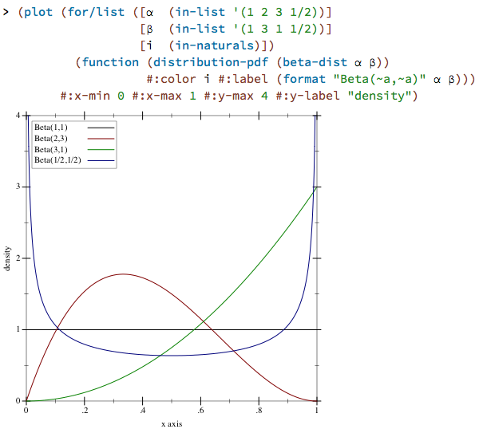
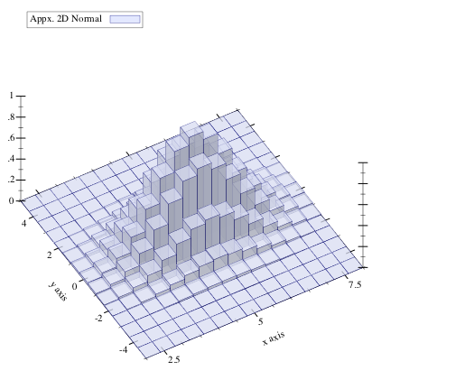
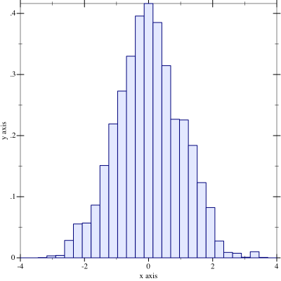
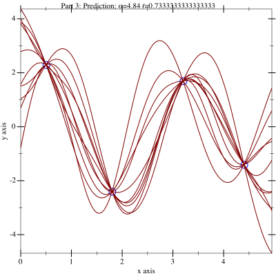
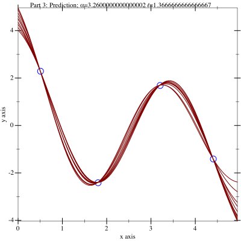
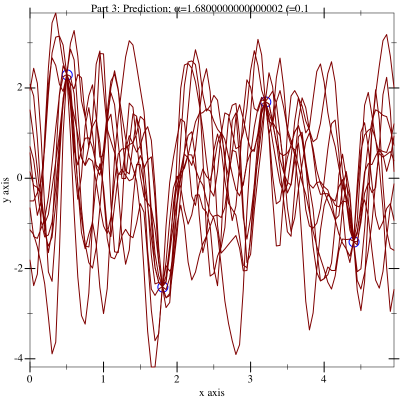
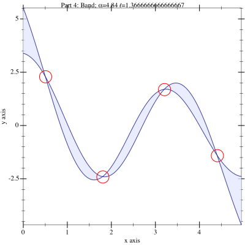

Machine Learning in Racket
Daniel King
daniel.zidan.king@gmail.com
1 Machine Learning
"… a branch of artificial intelligence, concerns the construction and study of systems that can learn from data." ~ Wikipedia
2 R
The R Language
2.1 Nulls
foo = data.frame()
> foo$bar
NULL
2.2 "c"
Vectors are created using the `c` operator, which is apparently slang for "combine":
> c(1,2,3,4) [1] 1 2 3 4
2.3 "c"
But, "All arguments are coerced to a common type which is the type of the returned value."
> c(1,2,3,4,'lolwut') [1] "1" "2" "3" "4" "lolwut"
2.4 Robust Parsing
echo 'x = function(_) { 42 }' > /tmp/foo
> source('/tmp/foo') *** caught segfault *** address 0x100, cause 'memory not mapped' Trace back: 1: source("/tmp/foo") Possible actions: 1: abort (with core dump, if enabled) 2: normal R exit 3: exit R without saving workspace 4: exit R saving workspace
2.5 Sensible Array Indexing
> foo <- c(1,2,3,4) > foo[0] <- 10 > foo [1] 1 2 3 4
2.6 Sensible Array Indexing
> foo <- c(1,2,3,4) > foo[8] <- 10 > foo [1] 1 2 3 4 NA NA NA 10
2.7 Static Types
Overarching Problem: No Static Type System
3 Typed Racket
Overarching Solution: Typed Racket + the Math Library
3.1 Distributions
> (require math) > (pdf (normal-dist 0 1) 0) 0.39894228040143265 > (pdf (beta-dist 2 3) .8) 0.38399999999999995
Awesome!
3.2 Beautiful Plotting -> Beautiful Docs

3.3 Beautiful Plotting -> Beautiful Docs
3.4 Beautiful Plotting -> Beautiful Docs
3.5 Numerical Optimization
> (require math) ... > (optim initial-values objective-function gradient) optim: undefined; cannot reference undefined identifier context...: /Applications/Racket v5.90.0.10/collects/racket/private/misc.rkt:87:7
3.6 Numerical Optimization
> (require math) ... > (optimize initial-values objective-function gradient) optimize: undefined; cannot reference undefined identifier context...: /Applications/Racket v5.90.0.10/collects/racket/private/misc.rkt:87:7
3.7 Multivariate Normal Distribution
> (require math) > (pdf (multivariate-normal-dist 0 1) 0) multivariate-normal-dist: undefined; cannot reference undefined identifier context...: /Applications/Racket v5.90.0.10/collects/racket/private/misc.rkt:87:7
3.8 Dirichlet Distribution
> (require math) > (pdf (dirichlet-dist (vector 1 2 3 4)) 0) dirichlet-dist: undefined; cannot reference undefined identifier context...: /Applications/Racket v5.90.0.10/collects/racket/private/misc.rkt:87:7
Dammit.
3.9 Histograms
> (histogram data-vector) histogram: undefined; cannot reference undefined identifier context...: /Applications/Racket v5.90.0.10/collects/racket/private/misc.rkt:87:7
Ugh.
Visualizing data without histograms is hard.
4 Racket-ML
I'm building a Racket library of machine learning related things.
4.1 Histograms
#lang typed/racket (require racket-ml plot/typed math ) (plot (hist-gen&render (sample (normal-dist 0 1) 1000) 30))
4.2 New Distributions
MVN and Dirichlet
4.3 Cholesky Decomposition
The Cholesky decomposition of a matrix is one definition of the notion of a "square root" operation on matrices.
\begin{equation} L = \mathrm{cholesky}(A) \text{ s.t. } A = L L^T \end{equation}4.4 Gaussian Processes
The Gaussian process is a distribution over functions.
\begin{equation} f(\vec{x}) \sim \mathcal{GP}(m(\mathbb{X}), \kappa(\mathbb{X}, \mathbb{X}^{\prime})) \end{equation}Where \(\mathbb{X}\) is the training data
4.4.1 A Few Draws
4.4.2 Tight Draws
4.4.3 Loose Draws
4.4.4 Credible Intervals
4.4.5 Math + Plot
The Math and Plot libraries handle all of this with ease
5 Bayesian Statistics
5.1 What the hell is "Bayesian" Statistics?
emacs vs vim
holy war
What matters is that when doing machine learning I talk about posteriors, priors, and likelihoods.
5.2 Bayes' Rule
\begin{equation} p(A|B) = \frac{p(B|A) p(A)}{p(B)} \end{equation}5.3 Bayes' Rule for Machine Learning
\begin{equation} p(M|D) = \frac{p(D|M) p(M)}{p(D)} \end{equation}- \(p(M|D)\) is called the posterior
- \(p(D|M)\) is called the likelihood of the data
- \(p(M)\) is called the prior
5.4 Posterior
We seek the posterior, which is a distribution over models.
If we want to predict new data (e.g. predict the weather tomorrow), we ask each model in the posterior what it thinks the new data should be.
For old ("training") data D and new data D'i which is predicted by model Mi:
\(p(D'_i \,|\, D) = p(D'_i \,|\, M_i)p(M_i \,|\, D)\)
5.5 Likelihood
This is the likelihood that the model explains our data. For linear regression, we could use the familiar least squares method.

Our model in this case is \(y = m * x + b\) where the model parameters are \(m\) and \(b\).
5.6 Prior
The prior encodes subjective knowledge about the world.
Priors are often used to combat over-fitting.
5.7 Inference
"… the process of drawing conclusions from data that are subject to random variation" ~ Wikipedia
Take a load of data push it through an algorithm to produce a model of the process that produced the data.